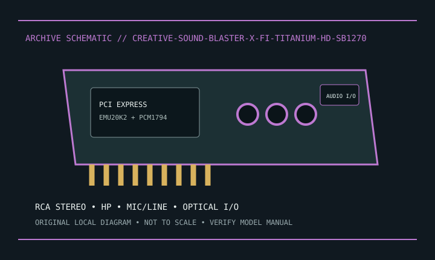

[ INDIVIDUAL MODEL // SOUND HARDWARE ]
Creative Sound Blaster X-Fi Titanium HD (SB1270)
SB1270 PCIe x1 stereo card with EMU20K2 DSP and PCM1794 DAC; distinguish from other X-Fi Titanium models.

Model-specific specifications
| Exact model / identity | SB1270 PCIe x1 stereo card with EMU20K2 DSP and PCM1794 DAC; distinguish from other X-Fi Titanium models. |
|---|---|
| Audio processor / codec / DAC | Creative X-Fi/EMU20K2 audio processor with Burr-Brown PCM1794 DAC. |
| Channels / resolution / sample rate | Stereo analog playback; Creative documents 24-bit/192 kHz playback. Recording and digital formats depend on driver path. |
| Analog and digital ports | RCA stereo line output, headphone, 3.5 mm mic/line input and optical S/PDIF input/output. |
| Slot / host interface | PCI Express x1. |
| Operating-system support | Creative archives Windows XP/Vista/7-era driver/software. Check support page for later packages; current OS compatibility is not guaranteed. |
Compatibility & preservation
Do not use specs or drivers for X-Fi Titanium, Fatal1ty or other SB models. Full feature access depends on legacy Creative software.
- Photograph the card label, board revision, bracket connections and included accessories before service.
- Retain the exact driver, firmware and operating-system version known to work with this model.
- Confirm slot fit, connector pinout, breakout hardware, channel mode and supported sample rate before integration.
Manufacturer sources
- Creative Sound Blaster X-Fi Titanium HD — official product supportManufacturer product, technical specification, or model manual source.
- Creative Sound Blaster X-Fi Titanium HD — official manualsManufacturer product, technical specification, or model manual source.